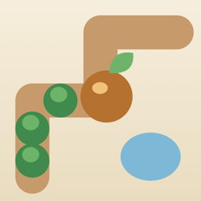

Tilt Maze Garden
Tilt your phone to roll a seed through a garden maze. Plants grow where you've rolled and stay even when you fall, so every attempt reshapes the puzzle. A hundred gardens across ten chapters, a new Daily Garden every day, and a level editor for sharing your own. On Apple Watch, play the Daily Garden and 20 Pocket Gardens made for your wrist.
Need help? Email support@soumyamahunt.com. Please include your device model and iOS version if something isn't working.
Apple Watch
The Watch app comes with the iPhone app. It has today's Daily Garden (the same garden as on iPhone, on the same leaderboard) and 20 Pocket Gardens: small gardens made for the wrist, with their own leaderboards and achievements. The first 3 are free; the one-time Pocket Gardens purchase unlocks the rest. There are no ads on the Watch.
Frequently asked questions
The seed doesn't roll the way I'm holding the phone
Hold the phone at the angle you like to play, then open the pause menu and tap Recalibrate tilt. That angle becomes "flat". You can also change Tilt sensitivity in Settings.
Can I play without tilting?
Yes. Turn on Settings › Touch controls and drag anywhere on the screen to steer. Audio cues (a drip near water, a prick near thorns, a chime next to buds) are always on while VoiceOver is running.
I'm walled in by hedges
Tap Undo to rewind your last fall, Clear to wither the hedges around you, or Replant to start the garden again.
How do I share a garden I built?
In Gardens, open the garden in the editor and tap the QR button. Friends can scan the code with the Camera app, or open the link, to play it.
How do I restore Remove Ads on a new device?
Open Settings › Ads and tap Restore Purchases, using the same Apple Account you bought it with.
How do I get the game on my Apple Watch?
It installs with the iPhone app if your Watch installs apps automatically. If it doesn't appear, open the Watch app on your iPhone, scroll to Available Apps and tap Install next to Maze Garden.
How do I steer on the Watch?
Hold your wrist at a comfortable angle and tap Start: that angle is "flat". Then tilt your wrist gently to roll. You can always drag on the screen instead, or turn on Touch steering in the Watch app's settings (the gear on its menu), which also has Haptic cues and Relaxed timing. VoiceOver describes the garden on the Watch too.
The Watch screen goes dark in the middle of a garden
Tilting isn't a touch, so the Watch goes to sleep after its wake time. The garden pauses and waits for you to tap Resume. For longer, set Settings › Display & Brightness › Wake Duration on the Watch to Wake for 70 Seconds.
How do I unlock Pocket Gardens or restore them?
Tap a locked garden on the Watch and then Unlock, or buy Pocket Gardens in the iPhone app's Settings › Apple Watch. To restore it, tap Restore Purchases in either place, using the same Apple Account you bought it with.
My Watch scores aren't on Game Center
When the Watch can't reach Game Center itself, it hands your results to the iPhone app, which posts them to your account. Open Maze Garden on your iPhone once and they'll appear.
Why do I see ads?
Ads keep the game free. Banners only appear on menus and full-screen ads only between gardens, never while you're rolling. Reward ads (hints and clearing hedges) only play when you choose them. The one-time Remove Ads purchase turns off banners and between-garden ads and makes rewards free. Where the law requires it, you can change your ad privacy choices in Settings › Privacy. The Apple Watch app has no ads.
Support
Remove Ads supports the game from inside it. You can also support all my apps on Patreon, which helps cover the developer account and keeps them maintained.